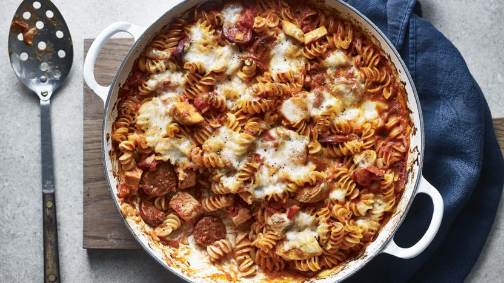

Chicken Pasta Bake

Description
This recipe can be used when you are short on time but want a meal that is high in protein and filling at the same time. This pasta bake is easy to make and prep. Once the bake has been prepped pop it into the oven and serve. Top with cheese for extra protein.
Ingredients
- 2 large Chicken breasts, skinless
- 340g fusilli
- 1 large onion, roughly chopped
- 100g chorizo
- 2 large garlic cloves
- 1/4 tsp dried chilli flakes
- 1/4 tsp sweet smoked paprika
- 600g tinned chopped tomatoes
- 2 tbsp double cream
- 250g mozzarella
- sea salt and freshly ground black pepper
Method
- Preheat the oven to 200C/180C Fan/Gas 6.
- Bring a saucepan of salted water to the boil and add the chicken. Reduce the heat to medium–low and gently poach the chicken for 10–15 minutes, or until just cooked through. Remove from the pan with a slotted spoon and set aside to cool.
- Bring a clean saucepan of salted water to the boil and add the pasta. Cook for just 10 minutes, or until the shapes are just softened but still have a lot of bite. Drain thoroughly.
- Add the onion and chorizo to a large casserole (or an ovenproof frying pan) set over a medium–high heat and fry for 7–8 minutes, or until the onion has softened. Add the garlic, followed by the chilli flakes and paprika and cook for a minute until the garlic is aromatic.
- Add the tomatoes, washing out the residual tomato juices from each tin with the wine (or water if not using wine). Stir the tomatoes into the sauce and leave to simmer for 5 minutes. Remove the pan from the heat and stir in the cream. Season with salt and pepper.
- Chop the cooked chicken breasts into bite-sized chunks and stir into the sauce along with the pasta.
- Tear the mozzarella and scatter over the top of the pasta. Finish with more black pepper and bake in the oven for 30 minutes, covering the dish with foil or a lid about halfway through, once the cheese is brown and bubbling.
Back to home